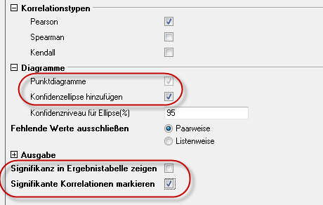
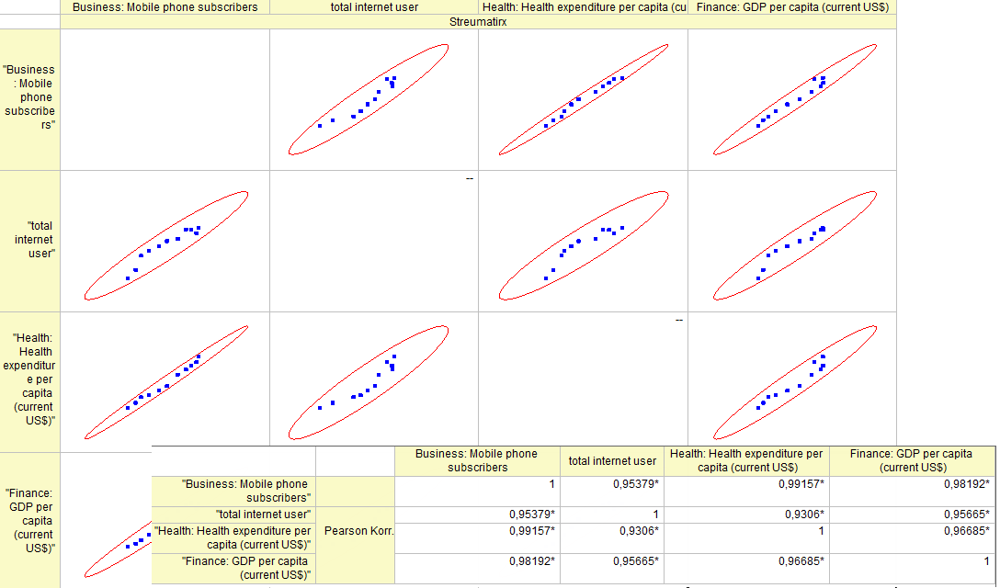
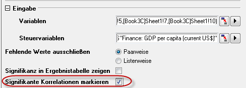
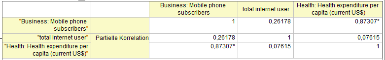

Partieller Korrelationskoeffizient
Partial-Corr-Coef
Zusammenfassung
Der partielle Korrelationskoeffizient ist ein Hilfsmittel zum Messen der linearen Beziehung zwischen zwei zufälligen Variablen, nachdem die Effekte einer oder mehrerer Steuervariablen ausgeschlossen wurden.
Was Sie lernen werden
Dieses Tutorial zeigt Ihnen:
- wie Sie eine partielle Korrelation in Origin durchführen (anhand eines praktischen Beispiels),
- wie Sie die erzeugten Ergebnisse interpretieren.
Anwenderbericht
Es stehen öffentliche Daten der Weltbank zur Verfügung, die 11 Messgrößen (Gesundheitsausgaben, BIP, Bevölkerung etc.) nach Land, für die Jahre 2000 bis 2010. Sie möchten die Beziehung zwischen Internetnutzung, Nutzung von Mobiltelefonen sowie den Gesundheitsausgaben in den USA untersuchen.
Beziehung mit Pearsons r entdecken
Dieses Tutorial basiert auf dem Projekt: <Origin-Verzeichnis>\Samples\Tutorial Data.opj.
- Öffnen Sie Tutorial Data.opj und navigieren Sie zum Ordner Partial Correlation Coefficient und aktivieren Sie die Mappe Partial Correlation Coefficient.
- Aktivieren Sie Sheet1 mit den Quelldaten. Sie haben bereits einen Datenfilter angewendet, um Daten für die USA zwischen 2000 und 2010 zu erhalten.
- Zuerst verwenden Sie das Hilfsmittel Korrelationskoeffizient, um die Beziehung zwischen Nutzer von mobilen Telefonen, Gesamtanzahl der Internetnutzer, Gesundheitsausgaben pro Kopf der Bevölkerung und dem BIP pro Kopf der Bevölkerung visuell zu erfassen.
- Drücken Sie die Strg-Taste und markieren Sie Col(E), Col(U1), Col(H) und Col(S).
- Wählen Sie im Menü Statistik: Deskriptive Statistik: Korrelationskoeffizient.
- Aktivieren Sie in dem geöffneten Dialog die Kontrollkästchen Punktdiagramme und Konfidenzellipse hinzufügen im Zweig Diagramme. Deaktivieren Sie das Kontrollkästchen Signifikanz in Ergebnistabelle zeigen und aktivieren Sie das Kontrollkästchen Signifikante Korrelationen markieren.
- 
- Aus dem Korrelationskoeffizient nach Pearson und der Matrix von Streudiagrammen können Sie ersehen:
- Die Streudaten sind relativ linear.
- Die Form der Konfidenzellipsen ist schmal.
- Alle Korrelationskoeffizienten nach Pearson werden mit rot gekennzeichnet.
- Jeder Korrelationskoeffizient nach Pearson ist größer als 0,9.
- Scheinbar besteht eine starke Beziehung zwischen Nutzer von mobilen Telefonen, Gesamtanzahl der Internetnutzer, Gesundheitsausgaben pro Kopf der Bevölkerung und BIP pro Kopf der Bevölkerung.
- 
Reale Beziehung mit partiellen Korrelationskoeffizienten offenbaren
Auch wenn es scheint, dass Nutzer von mobilen Telefonen, Gesamtanzahl der Internetnutzer and Gesundheitsausgaben pro Kopf der Bevölkerung eine starke Beziehung haben, wissen Sie, dass das BIP pro Kopf der Bevölkerung diese drei Messgrößen ebenfalls beeinflusst. Sie möchten die reale Beziehung der drei Messgrößen nach Ausschluss des Effekts durch das BIP pro Kopf der Bevölkerung messen.
- Aktivieren Sie das Blatt mit den Quelldaten. Drücken Sie die Strg-Taste und markieren Sie Col(E), Col(U1) und Col(H).
- Wählen Sie Statistik: Deskriptive Statistik: Partieller Korrelationskoeffizient.
- In dem geöffneten Dialog werden die drei markierten Spalten automatisch als Variablen ausgewählt.
- Sie möchten den Effekt des BIP pro Kopf der Bevölkerung entfernen, daher wählen Sie Col(S) als Steuervariablen. Aktivieren Sie das Kontrollkästchen Signifikante Korrelationen markieren.
- 
- Gehen Sie zum Blatt PCorr1. Es enthält die partiellen Korrelationskoeffizienten nach Ausschluss des Effekts des BIP pro Kopf der Bevölkerung. Sie können sehen:
- Nur Nutzer von mobilen Telefonen und Gesundheitsausgaben pro Kopf der Bevölkerung eine signifikante Beziehung haben (Der Wert der partiellen Korrelation ist mit rot gekennzeichnet). Aber die reale Beziehung ist nicht so stark wie Pearsons r zuvor gezeigt zu haben schien. (Partielle Korr. = 0,87307 vs. Pearsons Korr = 0,99157).
- Der partielle Korrelationskoeffizient für Nutzer von mobilen Telefonen und Gesamtanzahl der Internetnutzer verringerte sich auf 0,26178. Sie haben keine signifikante Beziehung.
- Es gibt keinen Nachweis, um zu zeigen, dass Gesamtanzahl der Internetnutzer und Gesundheitsausgaben pro Kopf der Bevölkerung eine Beziehung haben (Partieller Korr. = 0,07615), während Sie vorher Pearsons r = 0,96685 ermittelt haben.
- 
Schlussfolgerung
Warum ergeben sich dermaßen unterschiedliche Ergebnisse? Wenn Sie den Wert von Pearsons r des BIP pro Kopf der Bevölkerung zwischen den anderen drei Messgrößen betrachten, können Sie sehen, dass BIP pro Kopf der Bevölkerung von den drei Messgrößen beeinflusst wurde. Auch wenn es keine Beziehung zwischen Gesamtanzahl der Internetnutzer und Gesundheitsausgaben pro Kopf der Bevölkerung, Gesamtanzahl der Internetnutzer und Nutzer von mobilen Telefonen gibt, wird die "falsche Beziehung" noch immer durch Pearsons r aufgrund des Effekts des BIP pro Kopf der Bevölkerung angezeigt. Partielle Korrelationskoeffizienten sind für die Untersuchung der wahren Beziehung zwischen den zwei Faktoren nützlich, indem die Effekte der korrelierten Steuervariablen entfernt werden. Die Statistik ist für Experimente sinnvoll, mit denen verschiedene, in Wechselbeziehung stehende Phänomene zu untersuchen sind.